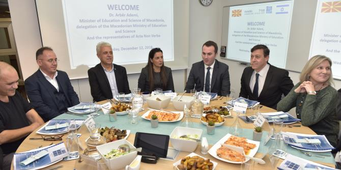

On December 12, 2018, Macedonian Minister of Education Arber Ademi, Israel's non-resident Ambassador to Macedonia Dan Oryan, and a delegation from Macedonia visited the Mandel Graduate Unit, where they heard Mandel graduates speak about their current work in education and society and learned about the training process at the Mandel School for Educational Leadership. Minister Ademi was in Israel for a conference on “Transforming Disabilities and Inclusive Education,” an event organized by Israel’s Agency for International Development Cooperation (MASHAV), and attended by senior officials from ministries of education and welfare from around the world.
The Macedonian delegation included the acting Macedonian Ambassador to Israel, as well as representatives of Acta Non-Verba, a Macedonian NGO that works to strengthen relationships between different ethnic groups in Macedonia through education, and places special emphasis on Holocaust remembrance.

Graduates of the Mandel School for Educational Leadership who participated in the meeting included: Professor Yoni Mizrachi, a graduate of Cohort 1 and the head of the sociology and anthropology department at the Max Stern Yezreel Valley College; Guy Levi, a graduate of Cohort 2 and chief innovation officer at the Center for Educational Technology; and Dr. Diana Daaboul, a graduate of Cohort 24, who is a lecturer at the David Yellin Academic College of Education and is the director of the Al Farah Center, which supports students with learning disabilities in private schools in East Jerusalem.
The graduates discussed their work and the long-term benefits of the training they received at the Mandel School. They also described the importance of the Mandel Graduate Unit as a professional home that continues to support them in their work and helps them realize their vision of improving education and society in Israel.
The event was led by
Dr. Granit Almog-Bareket, director of the Mandel Graduate Unit and a graduate of Cohort 14 of the Mandel School for Educational Leadership, who presented the Unit’s vision and guiding rationale.
Danny Bar Giora, director of the Mandel School for Educational Leadership and a graduate of Cohort 4, described the School and its training program.
Sharona Bar-Nes, a senior staff member of the Mandel Graduate Unit who is herself a graduate of Cohort 16, spoke about her experiences both as a fellow at the School and as a staff member supporting graduates in their continued professional development.
Ayala Bavly, a staff member of the Mandel Graduate Unit, described the Unit’s unique model of partnership with Mandel graduates.
{kind=link}